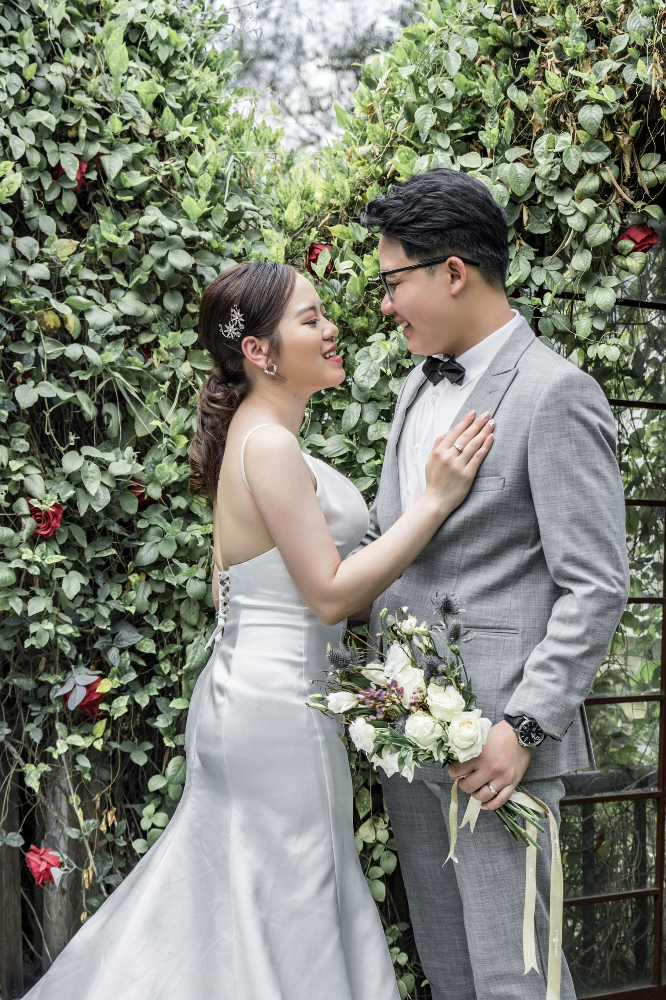
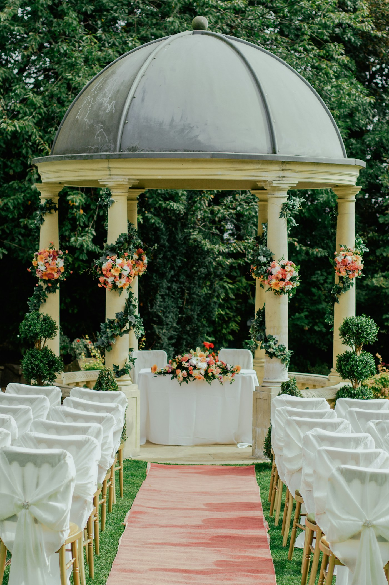
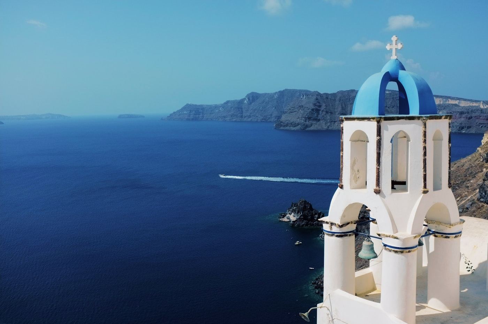

gather
Ceremony
The Magnolia Lawn
The wedding of
May 22, 2027 · Charleston, South Carolina
A garden celebration of love, laughter, and the beautiful life still to come.

Magnolias in bloom
and all our favorite people
A note from us
We cannot wait to celebrate with the people who have filled our lives with so much love. Join us for an evening among the magnolias as we begin our next chapter together.
With love, Amelia & Julian
Our story
Open each chapter for a tiny glimpse of how we found our way here.
At a mutual friend’s birthday dinner, Amelia borrowed Julian’s chair and somehow kept his attention for the rest of the night.
A tiny Italian restaurant, one shared tiramisu, and a walk that lasted two hours longer than planned.
We painted every room, planted rosemary by the back door, and learned that Julian should never assemble furniture alone.
Our golden girl arrived with giant paws, excellent timing, and a talent for making every day feel lighter.
Julian proposed under the oak trees at Magnolia Gardens, with Honey waiting nearby in a very crooked bow.
And now, surrounded by the people we love most, the next chapter begins.
Saturday · May 22
The Conservatory at Magnolia Gardens
Charleston, South Carolina
gather
The Magnolia Lawn
linger
The Conservatory Terrace
celebrate
The Glasshouse Ballroom
What to wear
Flowing dresses, polished suits, and colors inspired by spring are encouraged. Because portions of the celebration will take place outdoors, guests may want to choose shoes comfortable for walking on grass.
“Think spring at golden hour.”
Honorary flower girl
Honey has been preparing for her walk down the aisle through an intensive training program involving treats, naps, and repeatedly dropping the flower basket.
“I was told there would be chicken.”
Our favorite people
Tap a portrait to meet the people who know all the stories.
Has kept every note Amelia passed her since middle school—and may quote them in her toast.
 Theo HayesBest Man · Julian’s brother
Theo HayesBest Man · Julian’s brotherOnce convinced Julian that a cross-country road trip required exactly one paper map.
 Priya ShahBridesmaid · College roommate
Priya ShahBridesmaid · College roommateCan turn a five-minute coffee stop into the best afternoon of your week.
Still holds the neighborhood record for the slowest bicycle race ever won.
 Lena OrtizBridesmaid · Cousin
Lena OrtizBridesmaid · CousinNever arrives without a playlist, a snack, and a surprisingly good backup plan.
 Noah KimGroomsman · Work friend
Noah KimGroomsman · Work friendIntroduced Julian to espresso martinis and accepts no responsibility for the result.
 Mae SullivanBridesmaid · Neighbor turned family
Mae SullivanBridesmaid · Neighbor turned familyHoney’s favorite babysitter and the only person allowed to trim the rosemary.
Knows the exact right movie quote for every situation, including the ceremony rehearsal.
A little guide
Stay awhile. We have gathered the places and plans we cannot wait to share with you.
The Courtyard at The Dewberry · Garden cocktail
Magnolia Gardens · Garden formal
Leon’s Oyster Shop · Come as you are
Our primary hotel block in the heart of downtown.
Sample hotel details ↗A tiny neighborhood favorite for a long, lovely lunch.
Open map ↗Historic homes, harbor breezes, and our favorite morning stroll.
Open map ↗Go early for coffee and something warm from the oven.
Open map ↗Complimentary parking is available at the garden entrance. Shuttles will run continuously from the guest lot to the ceremony lawn beginning at 4:15 PM.
With gratitude
For those who have asked, we have created a small registry for our life together.
A glimpse of the feeling


Kindly respond
Please reply by April 10, 2027. This sample form demonstrates the guest experience; no information is sent or saved.
thank you
In a real wedding experience, the couple would receive your RSVP now. For this demo, nothing was sent or stored.
The little details
Your invitation will note whether we have reserved an additional seat for you.
We love your little ones. Unless named on the invitation, we are planning an adults-only evening.
Garden formal. Flowing dresses, polished suits, and spring-inspired colors are lovely but never required.
The ceremony and cocktail hour are outdoors, with dinner and dancing inside the glasshouse.
Shuttles will run from The Dewberry beginning at 4:00 PM and return throughout the evening.
Complimentary parking and garden shuttles are available at the main entrance.
Please reply by April 10, 2027.
We invite you to be fully present during our unplugged ceremony. Photos are warmly welcomed afterward.